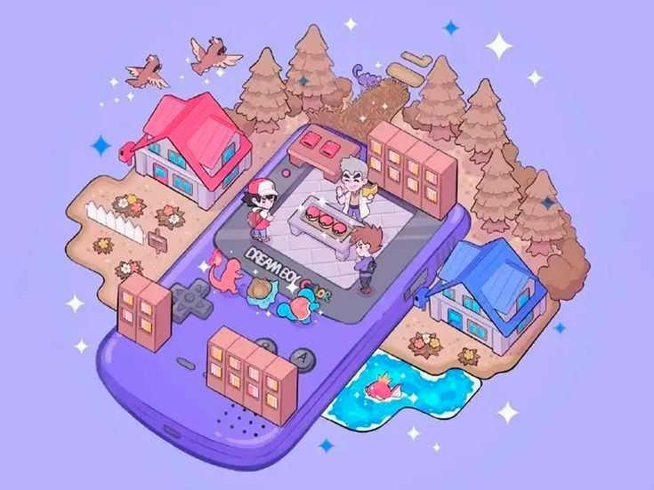
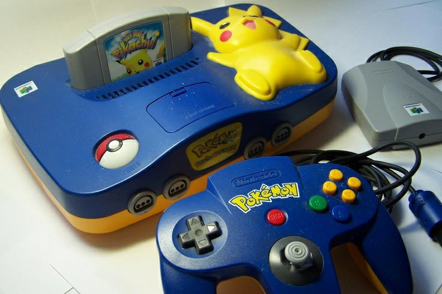
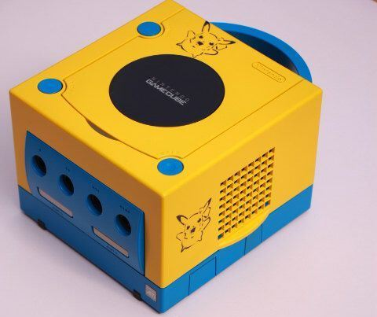
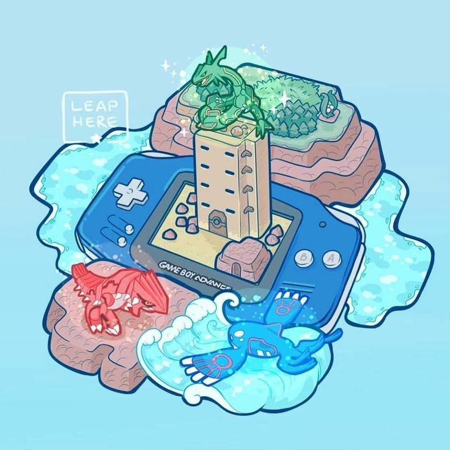
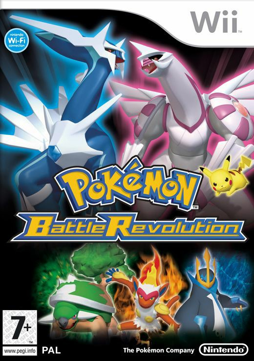
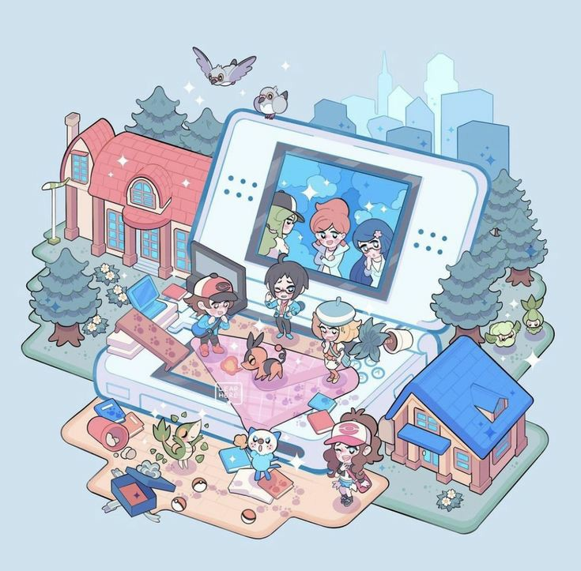
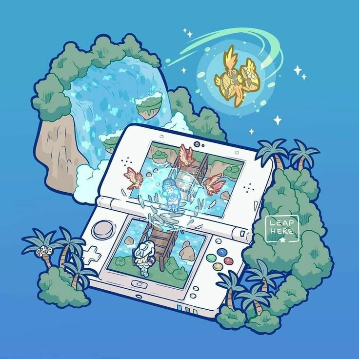
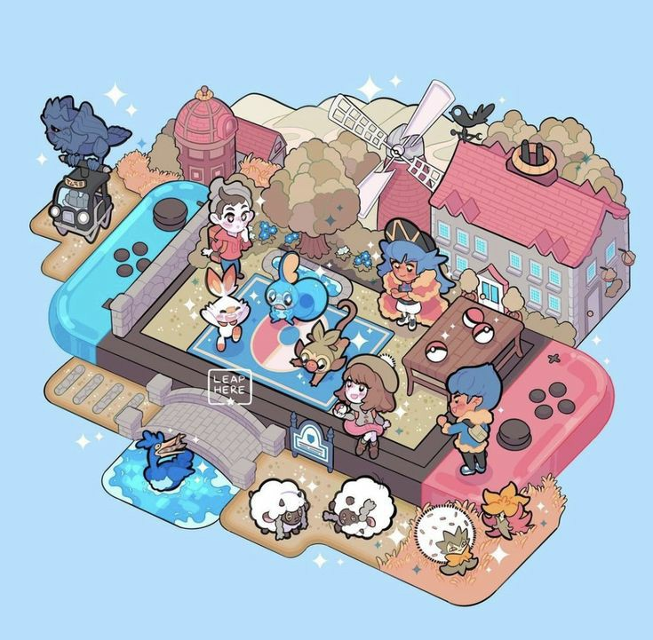
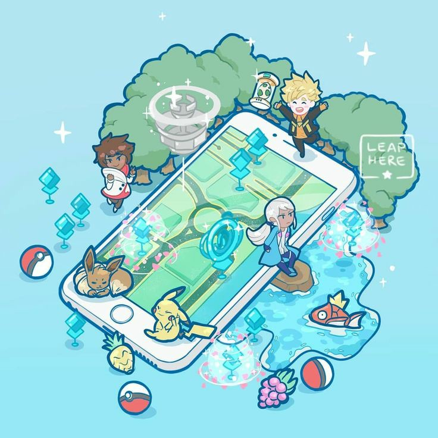

Juegos por Consola
Pokemon para Game Boy y Game Boy Color
Pokémon Red, Pokémon Blue y Pokémon Green (1996)
Pokémon Yellow: Special Pikachu Edition (1998)
Pokémon Trading Card Game (1998)
Pokémon Pinball (1999)
Pokémon oro y Pokémon plata (2000)
Pokémon Puzzle Challenge (2000)
Pokémon cristal (2000)
Pokémon Card GB (2001)

Pokemon para Nintendo 64
Hey You, Pikachu! (1998)
Pokémon Stadium (1999)
Pokémon Snap (1999)
Pokémon Stadium 2 (2000)
Pokémon Puzzle League (2000)

Pokemon para GameCube
Pokémon Colosseum (2003)
Pokémon Channel (2003)
Pokémon Box: Ruby & Sapphire (2003)
Pokémon XD: Gale of Darkness (2005)

Pokemon para Game Boy Advance
Pokémon rubí y Pokémon zafiro (2002)
Pokémon Pinball: Ruby & Sapphire (2003)
Pokémon rojo fuego y Pokémon verde hoja (2004)
Pokémon esmeralda (2004)

Pokemon para Wii y Wii U
Pokémon Battle Revolution (2006)
Pokémon Puzzle League (2008)
My Pokémon Ranch (2008)
Pokémon Rumble (2009)
Pokémon Mystery Dungeon (2009)
PokéPark: Pikachu’s Big Adventure (2010)
Poképark 2: Un mundo lleno de ilusiones (2012)
Pokémon Rumble U (2013)
PokéPark: Pikachu’s Big Adventure Wii (2015)
Pokkén Tournament (2016)
Pokémon Mundo Misterioso: Equipo de Rescate Azul & Rojo (2016)

Pokemon para Nintendo DS
Pokémon Dash (2004)
Pokémon Mundo Misterioso: Equipo de Rescate Rojo y Equipo de Rescate Azul (2005)
Pokémon Link (2005)
Pokémon Ranger (2006)
Pokémon diamante y Pokémon perla (2006)
Pokémon Mundo Misterioso: Exploradores del Tiempo y Exploradores de la Oscuridad (2007)
Pokémon platino (2008)
Pokémon Ranger: Shadows of Almia (2008)
Pokémon Mundo Misterioso: Exploradores del cielo (2009)
Pokémon HeartGold y SoulSilver (2009)
Pokémon Oro y Plata (2010)
Pokémon Ranger: Trazos de Luz (2010)
Pokémon negro y Pokémon blanco (2011)
Pokémon Conquest (2012)
Aprende con Pokémon: aventura entre las teclas (2012)
Pokémon negro 2 y Pokémon blanco (2012)

Pokemon para Nintendo 3DS & 2DS
Super Pokémon Rumble (2011)
Radar Pokémon (2012)
Pokédex 3D Pro (2012)
Pokémon Mundo Misterioso: Portales al Infinito (2013)
Pokémon X y Pokémon Y (2013)
Pokémon Tretta Lab (2013)
Pokémon Link: Battle! (2014)
Pokémon Art Academy (2014)
Pokémon Puzzle Challenge (2014)
Pokémon rubí omega y Pokémon zafiro alfa (2014)
Pokémon Picross (2015)
Pokémon Shuffle (2015)
Pokémon Rumble World (2015)
Pokémon Rojo, Azul yAmarillo (2016)
Pokémon sol y Pokémon luna (2016)
Pokémon Mundo Megamisterioso (2016)
Pokémon Edición Oro y Plata (2017)
Pokémon ultrasol y Pokémon ultraluna (2017)
Pokémon Cristal (2018)
Detective Pikachu (2018)

Pokemon para Nintendo Switch
Pokkén Tournament DX (2017)
Pokémon Let’s Go, Pikachu! y Pokémon Let’s Go, Eevee! (2018)
Pokémon Quest (2018)
Pokémon espada y Pokémon escudo (2019)
Pokémon HOME (2020)
Pokémon Mundo Misterioso Equipo de Rescate DX (2020)
Pokémon Café Mix (2020)
Pokémon Diamante Brillante y Pokémon Perla Reluciente (Finales 2021)
Leyendas Pokémon: Arceus (Inicios 2022)

Pokemon para iOS & Android
Pokémon say tap? (2011)
Pokemon Trading Card Game (2014)
Campamento Pokémon (2014)
Pokémon Shuffle (2015)
Pokémon Jukebox (2015)
Pokémon GO (2016)
Pokémon: Magikarp Jump (2017)
Pokémon Playhouse (2017)
Pokémon Duel (2017)
Pokémon Quest (2018)
Pokemon Rumble Rush (2019)
Pokémon Masters (2019)
Pokémon HOME (2020)
Pokémon Café Mix (2020)
